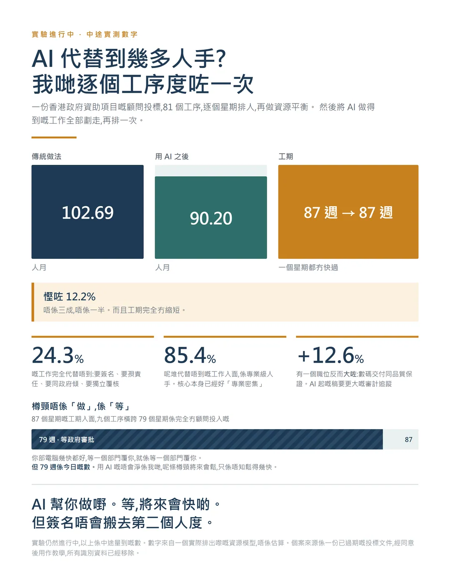
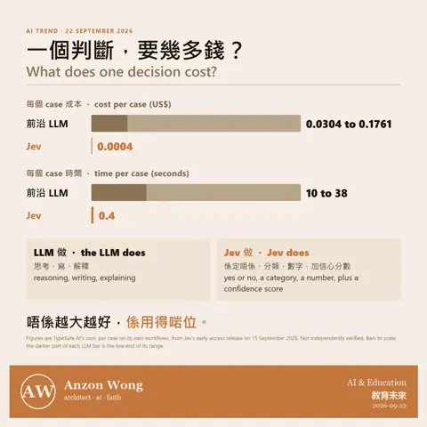
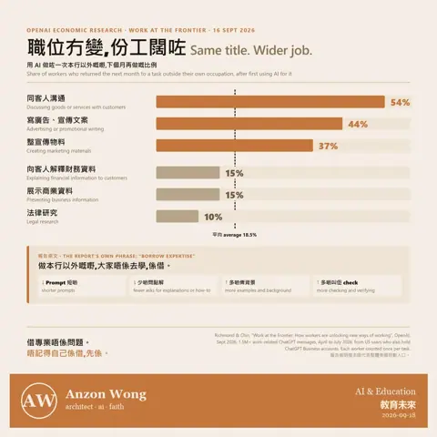
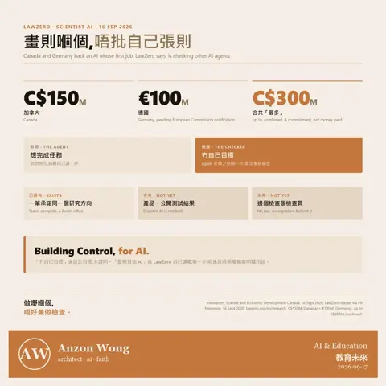

今日喺一個實驗入面見到一個數字,然後忽然明白咗一件關於我哋呢行將來會點嘅事
先講個數。
我而家做緊一個實驗,用一份真實嘅香港政府資助項目顧問投標,問一條好簡單嘅問題:用 AI 之後,究竟慳到幾多人手?
唔係憑感覺講。係砌咗一個 81 個工序嘅工作計劃,逐個星期排人,做資源平衡,然後再排多一次,今次將 AI 做得到嘅工作全部劃走。
第一次計:102.69 人月。
第二次計:90.20 人月。
慳咗 12.2%。
老實講,呢個數比我預期細好多。我原本估最少三成。
原因係:24.3% 嘅工作完全代替唔到。要簽名嘅、要孭專業責任嘅、要對一個未確認嘅事實落判斷嘅、要出席政府部門會議同人傾嘅,同埋獨立覆核 …… 一個 AI 起咗份稿,佢唔可以做自己份稿嘅獨立覆核。
而且工期完全冇縮短。87 個星期,用完 AI 之後仍然係 87 個星期。因為入面有九個工序橫跨 79 個星期,係完全冇顧問投入嘅,全部都係等政府審批。
到呢度為止,結論好似幾灰:AI 幫唔到幾多。
但係我叫佢再計多一次。而呢一次唔係「每個職位縮細啲」,係「重新諗個團隊點組成」。
結果:89.24 人月,而具名專業人員佔嘅比例,由 74.8% 升到 84.4%。
點解?因為刪咗嘅唔係人手,係職位。建築助理、工程師、規劃師 …… 佢哋本來負責嗰啲工作,搬咗去一個揸住 AI 工具嘅具名建築師身上。同一批工作,換咗一雙手做。
呢個數先係真正有意思嘅地方。
AI 帶嚟嘅慳,唔係嚟自「做快咗」,係嚟自「一個人做得闊咗」。
跟住我就諗起一樣嘢。
其實建築師呢個行業,係轉緊一個圈。
以前嘅建築師係乜都識嘅。畫圖、計結構、睇工程、同工匠傾、幫業主諗數。一個人由頭到尾。
後來唔得喇。樓越起越複雜,機電、結構、消防、環保、可持續、法規、安全,每一樣都深到一個人食唔落。於是就一路拆、一路拆,拆到今日一個項目十幾個顧問,每個人守住自己嗰一小塊。專業化係被逼出嚟嘅,唔係有人鍾意咁。
而家個圈好似行返轉頭。
唔係因為樓簡單咗 …… 樓只會越嚟越複雜。係因為「深度」變咗可以借。以前你要識一樣嘢,你要用幾年時間養一個識嘅人喺你隔籬。而家好多呢種深度,你可以即刻問到、即刻攞到、即刻驗到。
所以我估將來係咁:
工種嘅種類會少咗,但每個人要做嘅範圍會闊咗。
唔會再有一個職位叫「幫人排版嗰個」、「幫人抄數嗰個」、「幫人整會議紀錄嗰個」。呢啲會消失。
但亦都唔會有一個職位叫「乜都唔使識,問 AI 就得」。因為你唔識就驗唔到,驗唔到你就唔敢簽。
會留低嘅,係識得揸住成件事嘅人。知道成個流程點行、知道邊度會出事、知道一個答案幾時信得過幾時信唔過,最後夠膽簽個名落去。
呢個其實就係以前嗰個「乜都識」嘅建築師。只不過今次佢唔係靠自己一個人識晒,佢係靠工具借返嚟。
一個打十個嘅光景,可能真係返緊嚟。
但我要補三句,唔係謙虛,係要講清楚:
一、等嘅時間將來會短。79 個星期係今日嘅數。用 AI 嘅唔會淨係我哋,政府部門、業主、其他顧問大家都會用。審批入面好大部分係讀文件、對資料、寫意見,呢啲正正係 AI 做得最好嗰類。所以呢條樽頸會鬆,只係鬆得幾快、由邊邊先鬆,而家冇人答得到。
二、有啲嘢用咗 AI 之後反而要加人。我哋計到有一個職位唔單止冇縮,仲要大咗 12.6%,就係負責數碼交付同品質保證嗰個。因為 AI 起嘅稿要更大嘅審計追蹤,唔係更細。你要證明得到每一句嘢邊度嚟、邊份文件、邊條條文。
三、簽名唔會搬去第二個人度。工具再快,責任都仲係喺一個有名有姓嘅人身上。
所以如果有後生仔問我而家應該練咩,我會咁答:
唔好練做一個「做得快」嘅人,練做一個「揸得住、驗得到、夠膽簽」嘅人。
前者將來會越嚟越平,後者將來會越嚟越貴。
(實驗仲進行緊,以上係中途量到嘅數,唔係最終結論。數字全部嚟自一個實際排出嚟嘅資源模型,唔係估算。個案來源係一份已過期嘅投標文件,經同意後用作教學,所有識別資料已經移除。)


上星期，一間叫 TypeSafe AI 嘅公司推出咗一個新 model…叫 Jev。 佢唔識寫文章，亦唔會同你傾偈。你問佢，佢只會答一個決定：係定唔係、屬於邊一類、一個數字，再加一個「我有幾肯定」嘅機率。 聽落好似退步咗。但係…
用 AI 做自己本行以外嘅嘢,有啲做完一次就變成習慣,有啲唔會最易黐身嘅:同客人溝通,用過一次之後,下個月再用嘅有 54%。寫廣告 44%,整宣傳物料 37%。 最唔黐身嘅:向客人解釋財務資料 15%,法律研究 10%…
我做嘅工作,有一條規矩係冇人會質疑嘅:畫則嗰個人,唔可以自己批自己張則一棟樓要過 Building Regulations,檢查嗰個人同設計嗰個人一定係兩個人。唔係因為設計師唔老實,係因為想個 project 準時完成嘅人,天…